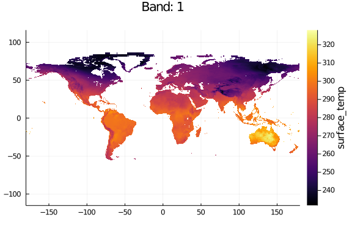
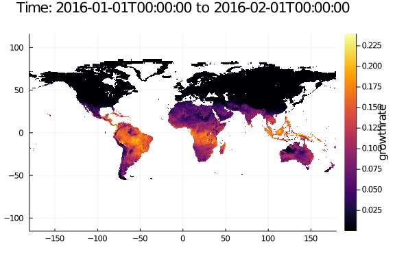
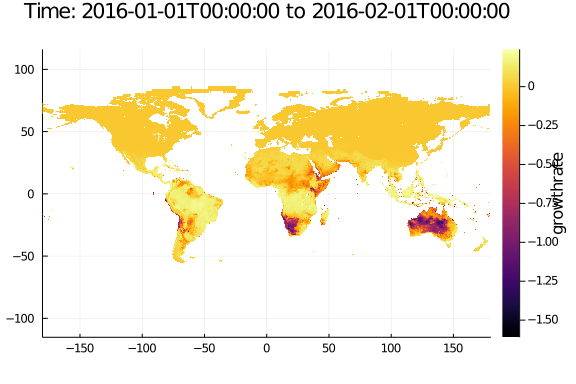
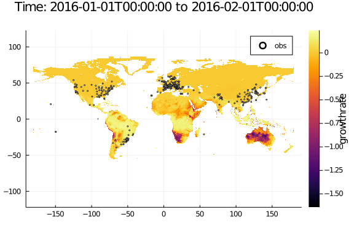
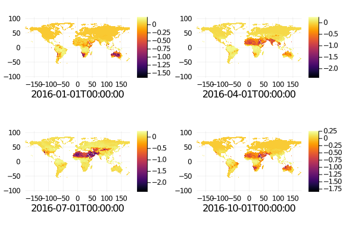
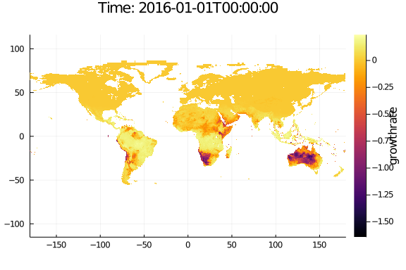

GrowthMaps.jl example
Rafael Schouten and James Maino
In this example we will calculate the expected population growth rates of Spotted Wing Drosophila (SWD) D. suzukii, for each month of the year on a 9km grid accross North America.
We'll experiment with running the model with a number of different datasets. GrowthMaps.jl, via GeoData.jl faciliates using a wide range of input sources. First we will use aggregated data in tiff files, then aggregate them to in-memory files to run the inferface. Finally if you can download it, we'll use the (huge) SMAP dataset, which is in a custom HDF5 format.
If you are using this as a .jmd file, it's best in to use atom with the "uber-juno" and "language-weave" plugins.
Load some required packages
These packages take care of loading and plotting data, and handling sci units and dates.
using GrowthMaps, Plots, Unitful, UnitfulRecipes, Dates
using GeoData, ArchGDAL, NCDatasets
using CSV, DataFrames
using Unitful: °C, K, cal, mol
basedir = joinpath(dirname(@__FILE__), "../")Define model components
First we'll define the growth model using SchoolfieldIntrinsicGrowth, based on Schoolfield (1981).
When defining model components, the first parameter is a :symbol for the required raster layer in the source data.
p = 3e-01
ΔH_A = 3e4cal/mol
ΔH_L = -1e5cal/mol
ΔH_H = 3e5cal/mol
Thalf_L = 2e2K
Thalf_H = 3e2K
T_ref = K(25.0°C)
growthmodel = SchoolfieldIntrinsicGrowth(p, ΔH_A, ΔH_L, Thalf_L, ΔH_H, Thalf_H, T_ref)
growth = Layer(:surface_temp, K, growthmodel)If these are only estimated parameters, We can fit the model to a a dataset of growth rate and temperature. First extract our independent and dependent variables from the example CSV:
mkpath(joinpath(basedir, "build"))
obsdata = CSV.File(joinpath(basedir, "swd_ecophys_data.csv"), select=[:x_value, :y_value, :y_key]) |> DataFrame
obsdata = filter(d -> d.y_key == "r_m", obsdata) |> dropmissingThen extract the required data colummns, and convert temperature values from unitless Celcius to explit Kelvins, using Unitful.jl:
obsrate = obsdata.y_value
obstemp = obsdata.x_value * °C .|> K
obs = collect(zip(obstemp, obsrate))Now we can fit the model. The fitrate function provides an easy way to fit the models in GrowthMaps or your own custom RateModels, using the LsqFit.jl package:
fittedgrowth = fit(growth, obs)Now plot the fit against the data:
temprange = (270.0:0.1:310.0)K
p = plot(x -> GrowthMaps.rate(fittedgrowth, x), temprange; label="fitted")
scatter!(p, obs; label="observed ")
We can also try tweaking the fitting the model manually in a user interface. Model components are immutable (for performance reasons), so we wrap the model in a mutable wraper so we can use the results. We parametrise the model over the same temperature range that we are plotting, using the :surface_temp key that the model requires:
wrapper = ModelWrapper(fittedgrowth)
tempdata=(surface_temp=temprange,)
manualfit!(wrapper, tempdata; obs=obs)If you are happy with the result, you we can update extract the manual fit to use to generate our growth rate maps:
fittedgrowth = wrapper.modelNote that manualfit! will also work for a tuple of model components that use the same source data, like (growth, heatstress, coldstress).
Load spatial data
Later we can use real SMAP datasets using GeoData.jl SMAPseries loader. But downloading the dataset takes too long for an example. Instead we will download and unzip some lower resolution monthly data to use in the model:
dataurl = "https://media.githubusercontent.com/media/cesaraustralia/GrowthMaps.jl/data/SMAP_aggregated27km.zip"
zipfilepath = joinpath(basedir, "SMAP_aggregated27km.zip")
unzippedfolder = joinpath(basedir, "SMAP_aggregated27km")
isfile(zipfilepath) || download(dataurl, zipfilepath)
run(`unzip -o $zipfilepath -d $basedir`);
# Get the paths for to all the wilting and surface temp files
filenames = readdir(unzippedfolder)
wilting_filenames = filter(fn -> occursin(r"land_fraction_wilting", fn), filenames)
surface_temp_filenames = filter(fn -> occursin(r"surface_temp", fn), filenames)
wilting_paths = joinpath.(Ref(unzippedfolder), wilting_filenames)
surface_temp_paths = map(p -> joinpath(unzippedfolder, p), surface_temp_filenames)
# Get the dates covered in the data from the `surface_temp` files list using regex
df = DateFormat("yyyymmddTHHMMSS");
dates = DateTime.(replace.(surface_temp_paths, Ref(r".*_(\d+T\d+).tif" => s"\1")), Ref(df))We know the land_fraction_wilting files are for the same dates.
Now we have the files and date seies, we can put together a series of GeoData.jl stacks to load lazily from disk while running mapgrowth.
The beauty of this approach is that we can use a lot of different source file types and folder configurations without converting them or running out of RAM.
function makestack(i)
GDALstack((land_fraction_wilting=wilting_paths[i],
surface_temp=surface_temp_paths[i]);
window=(Band(1),), # lazy view applied when the file is loaded.
childkwargs=(usercrs=EPSG(4326),), # lets us use lat/lon without knowing the underlying projection
)
end
stacks = [makestack(i) for i in 1:length(surface_temp_paths)]
timedim = Ti(dates; mode=Sampled(span=Regular(Hour(3))))
tiffseries = GeoSeries(stacks, (timedim,))We can plot a layer from a file at some date in the series:
tiffseries[Ti(Near(DateTime(2016, 2)))][:surface_temp] |> plot
Set the time period to a month, and set the length of the subsample period to the available times over one day:
Run a model over the spatial data
Define a timespan range to run the model over:
tspan=DateTime(2016, 1):Month(1):DateTime(2016, 12)Dates.DateTime("2016-01-01T00:00:00"):Dates.Month(1):Dates.DateTime("2016-1
2-01T00:00:00")Then to start, we'll run a simple model that only calculates growth rate.
output = mapgrowth(fittedgrowth;
series=tiffseries,
tspan=tspan,
)Then plot the results:
output[Ti(1)] |> plot
It doesn't really capture realistic population growth: there are no growth rates below zero. We need to add some stress models. Stress models model processes that produce negative deathrates in the population, as oposed to rate models, where the minimum growth rate is zero.
Stress models have a threshold in K and mortality rate per degree K. LowerStress models stress below the given threshold, while UpperStress models stress induced above a threshold.
We will define stress models for cold, heat and wilt stress. As SWD live on and around plants, we use the proportion of plants wilting as an indicater of stress induced by lack of moisture.
coldthresh = 7.0°C |> K # Enriquez2017
coldmort = -log(1.00) * K^-1
coldstress = Layer(:surface_temp, K, ColdStress(coldthresh, coldmort))
heatthresh = 30.0°C |> K # Kimura2004
heatmort = -log(1.15) * K^-1
heatstress = Layer(:surface_temp, K, HeatStress(heatthresh, heatmort))
wiltthresh = 0.5 # default?
wiltmort = -log(1.1);
wiltstress = Layer(:land_fraction_wilting, WiltStress(wiltthresh, wiltmort));To build a more complex model, we can chain components together in a tuple, and again, run and plot them:
output = mapgrowth(fittedgrowth, heatstress;
series=tiffseries,
tspan=tspan,
)
output[Ti(1)] |> plot
That looks better. There are negative growth rates in hot regions. Now lets run a full model with growth and three stressors:
output = mapgrowth(fittedgrowth, coldstress, heatstress, wiltstress;
series=tiffseries,
tspan=tspan,
)
output[Ti(1)] |> plotCompare with observation data
To compare out simulation with observations data, we'll first load them from a CSV file:
csvurl = "https://raw.githubusercontent.com/cesaraustralia/GrowthMaps.jl/data/Oersted_occurrence.csv"
csvfilename = joinpath(basedir, "Oersted_occurrence.csv")
isfile(csvfilename) || download(csvurl, csvfilename)Then scatter them on a map:
obs = CSV.File(csvfilename)
occurrence = collect(zip(obs.Longitude, obs.Latitude))
p = plot(output[Ti(1)])
scatter!(p, occurrence; markersize=2.0, markercolor=:white, markershape=:circle, label="obs")
Parametrising models using interactive maps
If you need to adjust the model based on the distribution, this can be done live in the interface, as with the manual fit.
But parametrising maps on large datasets is processor intensive, which inhibits interactive fedback. To reduce processing, we can aggregate the spatial data to a more manageable size.
You can experiment with the agg size to compromise between quality and render time. Large values will look pixelated but will run fast.
Center() simply takes the central cell. Statistics.mean would take the mean value.
agg = 8
aggseries = GeoData.aggregate(Center(), tiffseries, (Lon(agg), Lat(agg)))As the combination of models is additive, we can pre-build parts of the model we don't want to fit manually, which simplifies the interfaces and helps performance. Seeing we allready fit the growth response to empiracle data, lets just fit the stress responses to the map:
modelkwargs = (series=aggseries, tspan=tspan)
precomputed = mapgrowth(fittedgrowth; modelkwargs...)Then fit the other components. throttle will dictate how fast the interface updates. Make it larger on a slow machine, smaller on a faster one. The window argument lets us select a window of the output to view, using DimensionalData.jl/GeoData.jl Dimensions and Selectors. Here we only plot the first time: but you can select any/multiple, and select them with Near(DateTime(2016,2)) or similar.
wrapper = ModelWrapper(wiltstress, coldstress, heatstress)
throttle = 0.2
interface = mapfit!(wrapper, modelkwargs;
occurrence=occurrence,
precomputed=precomputed,
throttle=throttle,
markershape=:cross,
markercolor=:lightblue,
markeropacity=0.4,
window=(Ti(1),),
)In atom, this will show the interface in the plot pane:
display(interface)To use the it in a desktop app, use Blink.jl:
using Blink
w = Blink.Window()
body!(w, interface)And get the updated model components from the wrapper:
wiltstress, coldstress, heatstress = wrapper.modelNow we will put together decent population growth maps using the higher resolutions data, and a monthly tiestep:
output = mapgrowth(fittedgrowth, wiltstress, coldstress, heatstress;
series=tiffseries,
tspan=tspan,
);
plot(output[Ti(1:3:12)]; axis=false)
This output is ready to use for projecting growthrates, or in a dispersal simulation using Dispersal.jl. Lets save it as a NetCDF file using GeoData.jl:
span(output, Ti)
savepath = joinpath(basedir, "growthrates.ncd")
write(savepath, NCDarray, output)We can load it again with:
ncarray = NCDarray(savepath)
plot(ncarray[Ti(1)])
Use the SMAP dataset
Using aggregated data loses some of the impact of the stress models, which respond to extremes, not averages. If you need to use the model for a serious application, run it on the real SMAP dataset.
Unfortunately we can't just download the data for you with a script, as you need to log in to an account to have access.
But GeoData.jl has a SMAPseries() constructor that will automate the whole process of loading SMAP HDF5 files from a folder once you have the data.
We can also reduce the numer of days processed to 8 each month (or whatever) using the Where selector from DimensionalData.jl.
using HDF5
# Set this to your own SMAP data folder
smappath = "/home/raf/Storage/Data/SMAP/SMAP_L4_SM_gph_v4"
# Choose the dayes of month to use
days = (1, 4, 8, 12, 16, 20, 23, 27) # 8 days per month
#days = 1:31 # all days
# Use the `Where` selector to choose dates in the time index by day of month
smapseries = SMAPseries(smappath)[Ti(Where(d -> dayofmonth(d) in days))]Run the model:
@time output = mapgrowth(fittedgrowth, wiltstress, coldstress, heatstress;
series=smapseries, tspan=tspan,
)
plot(output[Ti(1:3:12)]; axis=false)And save a netcdf:
write(joinpath(basedir, "growthrates.ncd"), NCDarray, output)